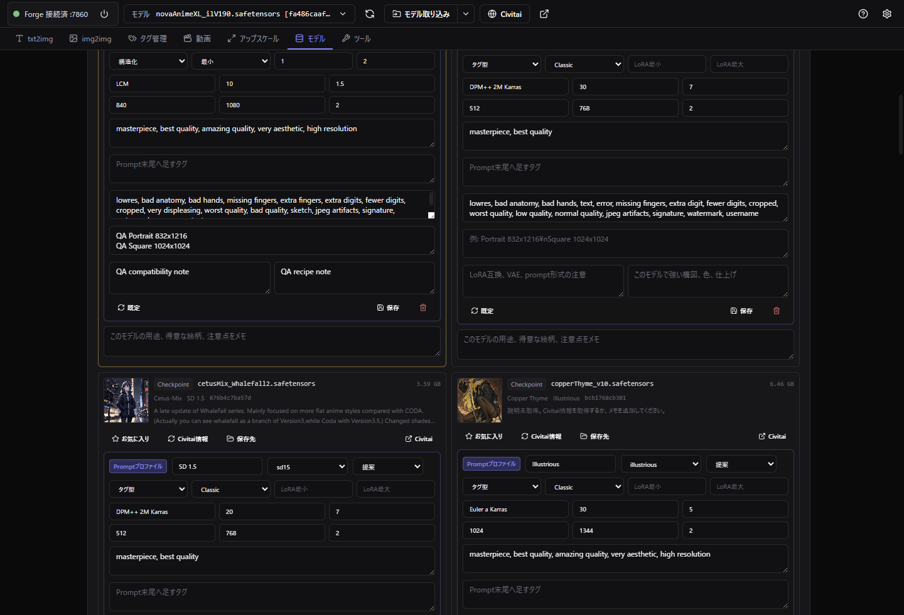
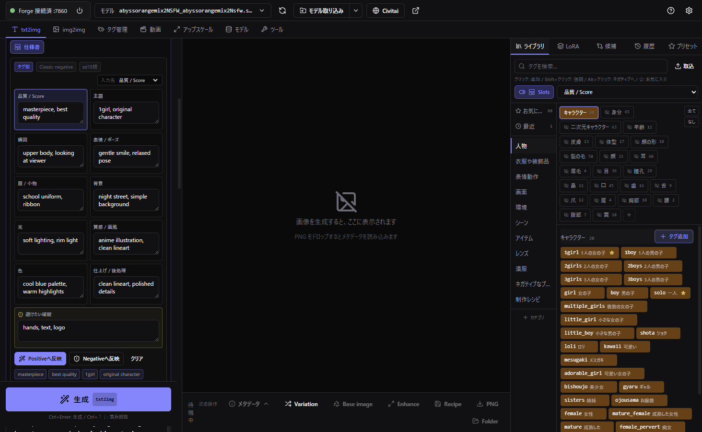
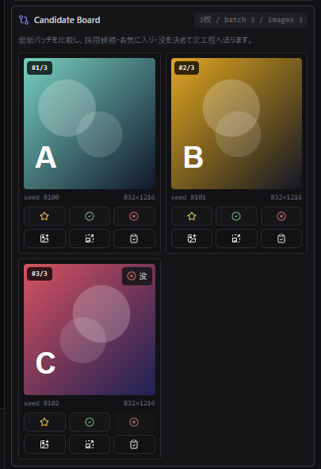
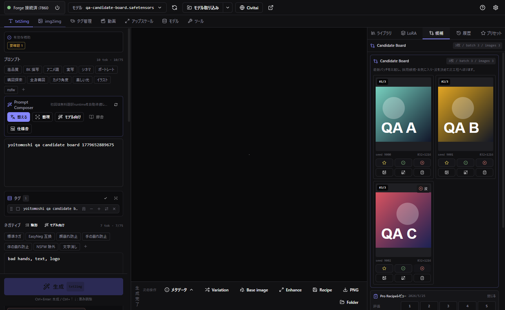
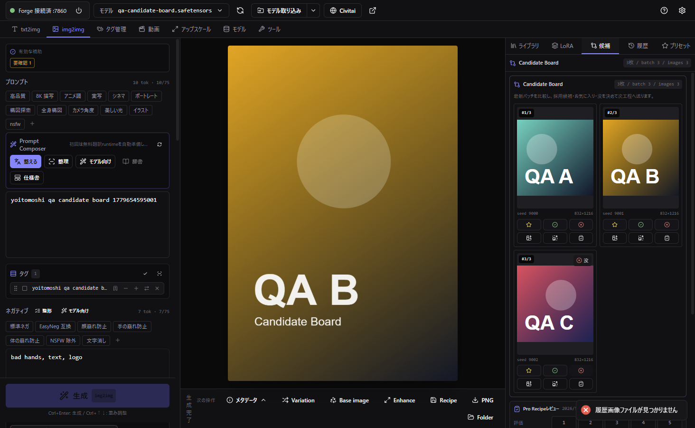
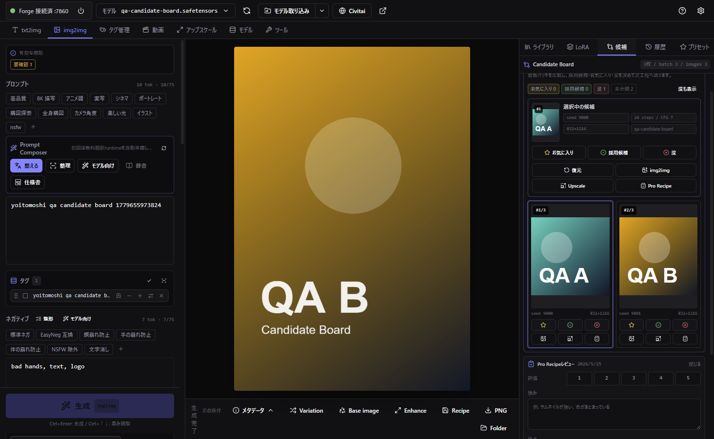
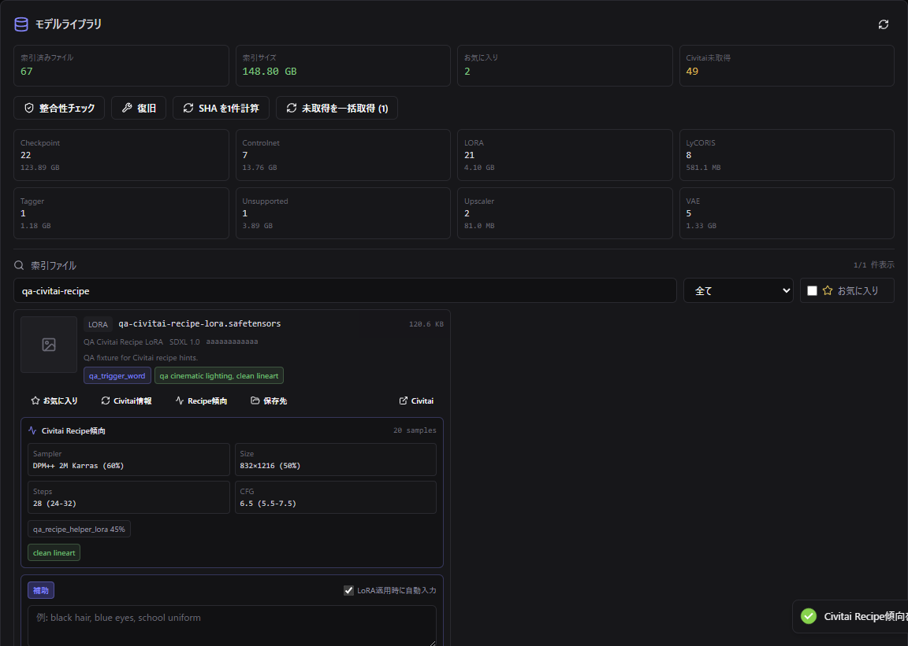

P1
Pro Recipe Review MVP
Historyに制作判断を保存
HistoryProRecipeReviewと保存IPCを追加。- rating、strengths、issues、nextActionsをHistory GUIから編集。
tagReviewと責務を分離し、既存履歴の後方互換を維持。
Stable Diffusion / Forge の生成UIを、プロAIイラスト制作向けの「モデル作法、Prompt仕様書、候補選別、Recipe保存、Civitai観測」ワークフローへ拡張した作業記録です。
今回の実装は、単にPromptを長くする機能ではなく、成功条件を保存して次の制作判断へ戻す流れを作ったものです。
Phase 1からPhase 5までを実装済み。Phase 6は設計確認のみで、次の任意フェーズとして残しています。
Historyに制作判断を保存
HistoryProRecipeReview と保存IPCを追加。tagReview と責務を分離し、既存履歴の後方互換を維持。モデルごとのPrompt作法と推奨設定
baseModel、Prompt形式、Negative方針、推奨比率、LoRA数を追加。視覚仕様書からPromptを生成
batch候補の選別と次工程への送信
favorite、candidate、rejected を候補カード上で保存。流通レシピをModel LibraryとPrompt Composerへ
trainedWords と recommendedPrompts をModel Library metadataへ追加。fetchLoraByHash() に接続。次フェーズ。今回は設計確認のみ
プロ仕様のGUIとして、常用する制作判断を小さい操作面へ集約しました。








既存タブ構成を崩さず、History、Prompt、Model Library、Civitai、storageに必要な契約を追加しました。
HistoryGallery.tsxSidePanel.tsxstore.tsPromptComposerPanel.tsxPromptLibrary.tsxprompt-composer.tsToolsWorkspace.tsxcheckpoint-prompt-profile.tscivitai-api.tsipc-handlers.tsdom-qa.cjsdocs/PRO_AI_ILLUSTRATION_IMPLEMENTATION_ROADMAP_2026-05-25.mddocs/maps/*.mdscripts/launch-electron.ps1electron/main.tscreate-desktop-shortcut.ps1App.tsxHistoryGallery.tsxdocs/maps/04-history-metadata-flow.mdショートカットを押してもGUIが出ない状態を、起動済みプロセスとウィンドウ可視状態から切り分けました。
C:\Users\Humin\OneDrive\デスクトップ\Yoitomoshi Art Generator.lnk は正しい Yoitomoshi.bat を参照。SW_SHOW / SW_RESTORE して前面化。second-instance が hidden window を再表示できるように変更。show()、restore()、moveTop()、focus() を共通化。GUI変更はDOM QAで、保存契約はfixtureと型チェックで確認しました。
npm.cmd run typecheck passednpm.cmd run build passed
npm.cmd run qa:dom:candidate-board -- --port=9338 passed
npm.cmd run qa:dom:prompt-composer -- --port=9338 passednpm.cmd run qa:dom:model-library-recipe -- --port=9338 passed
node --check scripts\dom-qa.cjs passedgit diff --check passed
cmd /c Yoitomoshi.bat passedVisible=True
Phase 6のReference Boardは、既存の WorkspaceImageReference、ControlNet unit、img2img入力、Workspace保存契約を確認した段階です。
実装する場合は、構図、ポーズ、顔、服、配色、スタイルの参照slotを作り、ControlNet / img2img / 将来のIP-Adapter候補へ送る導線を追加します。